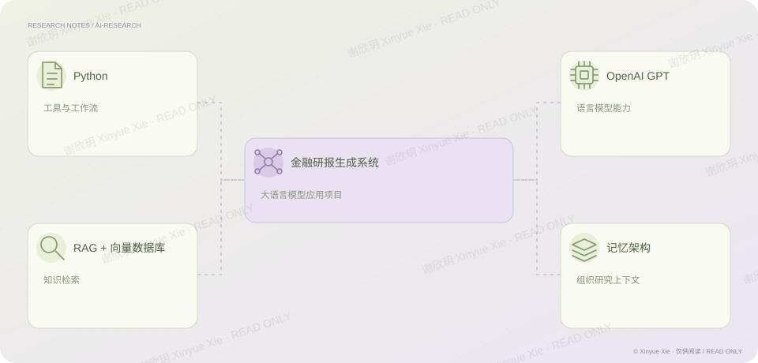

AI 应用项目
智能金融研报生成系统
让资料检索进入研报写作流程。
PROJECT NOTES / THE BIG PICTURE
项目思路

01核心判断
这个项目尝试把金融研报写作中的资料检索与文本组织连接起来。我使用 Python、大语言模型和向量数据库搭建系统，通过检索增强生成，让系统先查找相关资料，再辅助生成内容，并用记忆架构保留研究上下文。它展示的是我把 AI 能力接入具体研究流程的尝试；生成结果仍需要研究者核对资料与判断。
02分析过程
用向量数据库组织资料，支持相关信息检索。 把检索结果交给模型，辅助组织研究文本。 用记忆架构保留上下文，人工核对事实和推理。
03论文与项目题名
基于大语言模型的智能金融研报生成系统
相关经历AI 应用项目
做成工具
将资料检索、语言模型与记忆架构接入写作流程。
谢欣玥 Xinyue Xie · 研究作品仅供在线阅读
← 返回全部作品